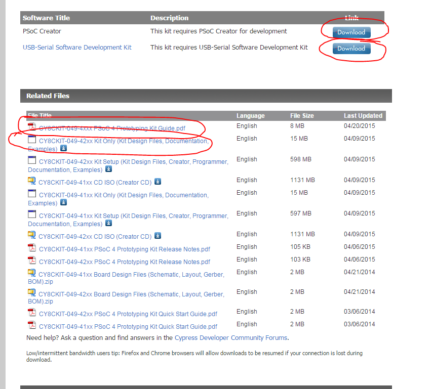
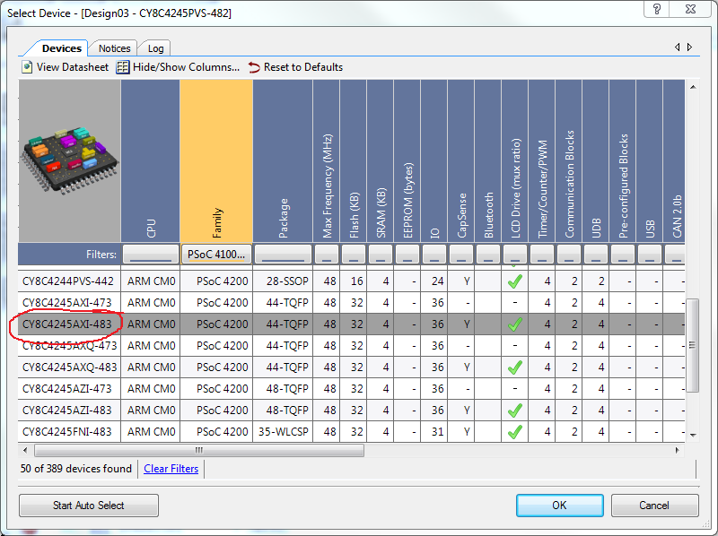
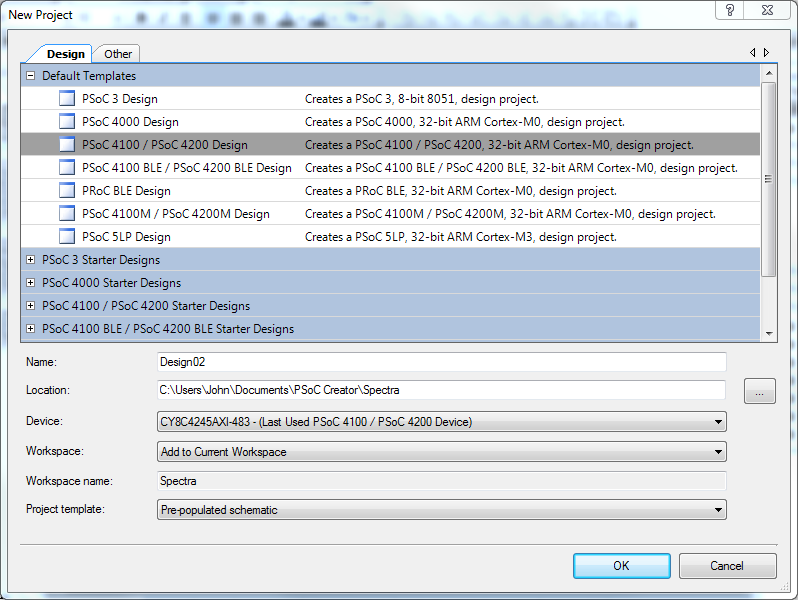

Programação com Psoc4 da cypress
para iniciar a programação com o s Psoc existem um conjunto de requesitos que devem estar instalados na máquina de desenvolvimento
sigam os passos que se aprensetam cortesisa do João Nuno Carvalho
USB-Serial Software Development Kit - meio da página
CY8CKIT-049-42xx Kit Only (Kit Design Files, Documentation, Examples)(fim da página)
Leiam o seguinte PDF com muita atenção:
CY8CKIT-049-4xxx PSoC 4 Prototyping Kit Guide.pdf (no fim da página)
Façam download do projecto que eu fiz especificamente para vocês experimentarem e que enviei para a mailing list. O nome do email é:
[Video de descrição da programação do Psoc4]{http://video.cypress.com/video-library/video/PSoC-Software/PSoC-Creator-101-CY8CKIT-049-Prototyping-Kit-Reset-and-Return-to-Bootloader-Project/4028453454001}
Em termos de hardware, -Comprem um cabo de USB macho-femea de 1 metro ou menos. -Comprem duas fileiras de header femea para soldarem na parte de cima do PSoC 4 049-KIT. -Não estraguem o mapa dos pinos que vem com a embalagem pois dá muito jeito para consulta.
Após instalarem o Psoc Creator , ter atenção que um processo da AKAMAI Net Client ficará a correr podendo ocorrer atrasos no comportamento da rede.
podem facilmente pará-lo abrindo o MSConfig.exe e retirando do arranque do windows.
indicação do ficheiros a fazer download como explicado pelo João Nuno Carvalho.

Como escolher o dispositivo no projecto do Psoc Creator
Para as placas Psoc4 o dispositivo é o CY8C4245AXI-483 da Familia 4200

Para desenvolver o primeiro Projecto com base no PSoc4
escolher um projecto pré-populado.
